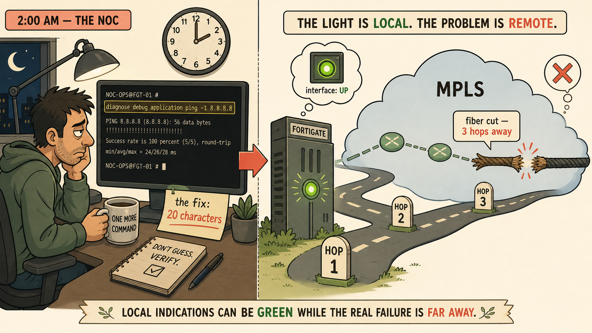
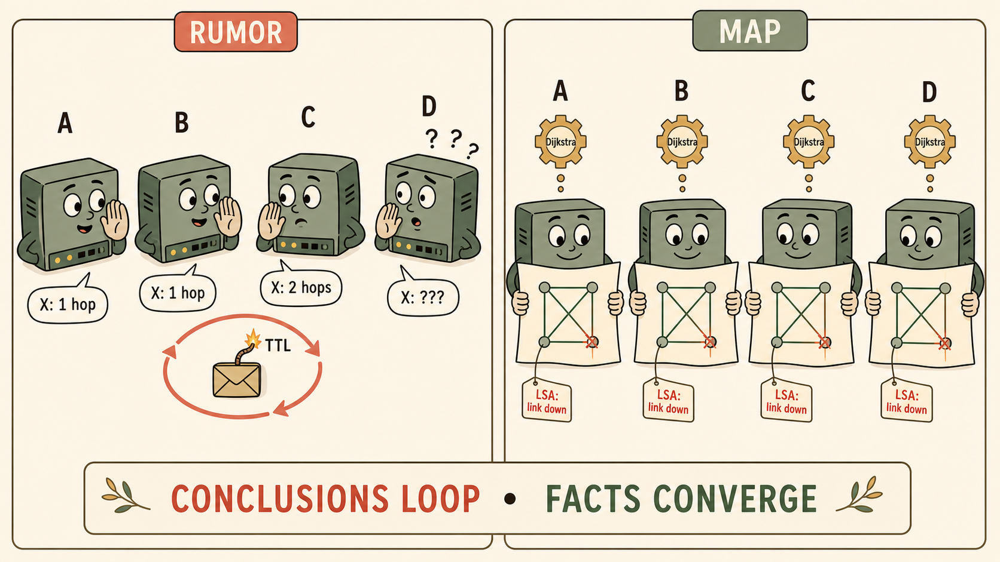
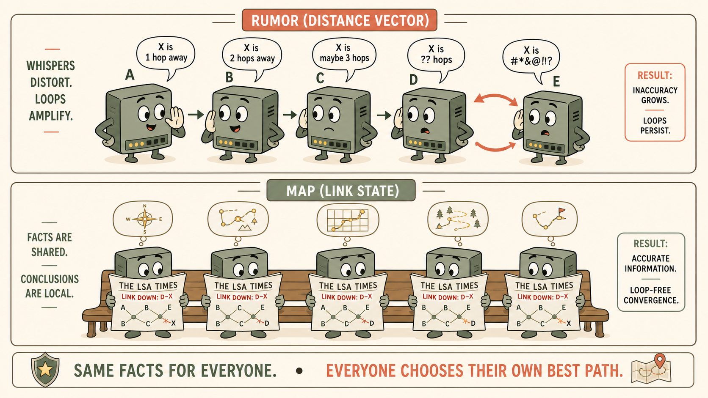

The NOC engineer fixed a 55-minute outage with four minutes of typing. The route was trivially easy to create — which means the route itself was never the missing piece. Something else was.
- If a human can add the correct static route in four minutes, what exactly is dynamic routing replacing — the route, or something else in the chain of events?
- The FortiGate's MPLS-facing interface showed green all night. The fiber cut was three hops away, inside the provider's cloud. Why can't any amount of local interface monitoring detect that failure?
Static Routes Are Silent — The Human Is the Protocol

The green light lies: local link state says nothing about the path beyond it.
Saturday night at Vaultline: the primary datacenter's MPLS circuit died from a fiber cut inside the provider's cloud. The DR site — its own internet breakout, healthy firewall, running servers — never came up. The outage lasted 55 minutes; the eventual fix took four: one static route on the core router, one static default adjustment on the edge FortiGate.
A static route is a rule sitting in a table. It never talks to anyone, never verifies anything, and never gets better with new information. The only failure it can react to is local interface state — FortiOS will withdraw a static route whose next-hop interface goes down. But Saturday's interface stayed green the whole time, because the break was three hops away on infrastructure Vaultline doesn't own.
So the missing capability was never "a route." It was continuous monitoring, immediate detection, and automatic reaction — the three things the NOC engineer performed manually at 2am. Static routing scales to roughly three sites before that human-in-the-loop cost breaks operations; dynamic routing is what removes the human from the loop.
If a router needs to know its neighbor is alive, silence is a problem: silence could mean "nothing changed" or "I'm dead." Routing protocols solve this with an ongoing conversation — but a conversation with your direct neighbor only proves your direct neighbor.
- What does a dynamic routing protocol do on the wire, continuously, that a static route never does at all?
- Hellos between the FortiGate and its direct neighbor were healthy all Saturday night. The failure was three hops away. What has to happen for a failure far away to become knowledge close to home?
The Liveness Conversation — Hellos, Neighbors, Advertisements
Every dynamic routing protocol is built on the same primitive: the neighbor relationship. Two routers agree to exchange periodic proof-of-life messages, and to tell each other when something they previously claimed stops being true. This turns the network from a set of silent rules into an active conversation.
But hellos only prove the directly connected neighbor. Remote failure knowledge travels by advertisement: the router that saw the failure announces it, and the announcement propagates. How that announcement is structured — a raw fact about topology, or a summarized conclusion — is exactly what splits the two great families of routing protocol in Section 3.
| Mechanism | Question it answers | Scope |
|---|---|---|
| Hello / keepalive | "Is my neighbor still alive?" | Directly connected peer only |
| Advertisement / update | "What changed in the network?" | Propagated hop by hop or flooded domain-wide |
| Interface state | "Is my own link up?" | Local — even static routes react to this |
There are two ways to spread routing knowledge: pass along your conclusions ("I can reach X, 2 hops — trust me"), or share the raw facts and let everyone reach their own conclusions. One of these loops. One structurally cannot.
- Four routers in a line, A–B–C–D. D's link to network X dies, but before C hears the news, B asks C for a route and C answers from its stale table. Trace what B now believes, and what happens to a packet sent along that belief.
- If B and C both run Dijkstra independently over the same link-state database, is it possible for B's calculated path to depend on what C currently believes? What is the only condition under which they can disagree?
Rumor vs Map — Why OSPF Cannot Loop

Distance-vector passes conclusions; link-state shares facts and lets every router draw its own conclusion.
Distance-vector (RIP's family) is rumor-passing: each router tells neighbors its conclusions — "I can reach X at distance N" — and each neighbor adds a hop and passes the rumor on. No router holds a map; every router trusts summaries. When a link dies, stale beliefs keep circulating for a while, and two routers pointing at each other creates the classic routing loop. TTL limits the damage per packet; split-horizon, poison reverse, and hold-down timers are band-aids that suppress the loop — but the information model itself remains rumor.
Link-state (OSPF) changes what travels: not conclusions, but facts about the graph. When a link dies, the witnessing router floods a Link-State Advertisement — "this specific edge no longer exists" — verbatim and unmodified, to every router in the area. Each router deletes that edge from its own identical copy of the link-state database and independently reruns Dijkstra's shortest-path-first algorithm from itself outward.
That's why the loop is structurally impossible rather than merely unlikely: B never asks C's opinion, so C's stale belief can't contaminate B's calculation. OSPF's correctness guarantee is precise — no loops, once databases are synchronized. The brief flooding window is the only exposure, and OSPF's reliable flooding machinery (sequence numbers, acknowledgments, retransmission) exists solely to shrink it.
Chinese whispers vs a shared newspaper.
- Distance-vector is a whisper chain: every ear-to-mouth hop can carry stale or distorted claims, and two people repeating each other's rumor can loop forever.
- Link-state is everyone reading the same newspaper: the correction ("bridge closed on Route X") is printed identically for all readers, and each reader replans their own commute from the same facts.
- The newspaper can only mislead you during the minutes before your copy arrives — which is exactly OSPF's flooding window.

Rumors decay hop by hop; a shared publication converges everyone on the same facts.
OSPF's model — everyone holds the full map — works beautifully inside one company. Now imagine running it between Vaultline and its ISP, or across the entire internet. Two independent things break, and both matter.
- What happens to a router's CPU and memory if "the area" isn't a few dozen routers, but hundreds of thousands of networks owned by companies that don't trust each other?
- BGP's default hold timer is 180 seconds; OSPF declares a neighbor dead in 40. Why would the protocol carrying the internet tolerate three minutes of silence?
Inside vs Between — OSPF Is the House Rules, BGP Is Diplomacy
The boundary is administrative, not technical. An IGP (Interior Gateway Protocol — OSPF is the dominant enterprise choice) runs inside one administration, where every router is trusted, the domain is small, and fast convergence is worth occasional false alarms. An EGP (Exterior Gateway Protocol — BGP is the internet's protocol of record) runs between administrations that are commercial rivals, at a scale where full topology sharing is impossible for both trust and CPU reasons.
BGP therefore inverts OSPF's information model. Peers form a session over TCP port 179 (OSPF runs directly on IP — a real exam detail) and exchange reachability claims, not topology: "I can reach these prefixes; here's the path summary." The claim stays valid only while the session lives, and is revocable at any moment via an explicit withdrawal message. Because silence is ambiguous — "nothing changed" and "I'm dead" look identical — BGP peers exchange keepalives (default 60s), and a peer that stays silent past the hold timer (default 180s) is declared dead, at which point every route learned from it is flushed.
Those glacial timers are a design choice, not laziness. A session flap doesn't withdraw one route — it dumps and then reloads an entire table, potentially 900,000+ internet prefixes, across every downstream router. Constant flapping at internet scale is a named pathology, route flapping, serious enough that route flap damping (penalize the unstable prefix, suppress it, decay the penalty over a half-life) was invented to contain it. See extras-04 for the dedicated bite.
| Dimension | OSPF (IGP) | BGP (EGP) |
|---|---|---|
| Shares | Topology facts (LSAs) — the graph itself | Reachability claims — "I can get there" |
| Trust domain | One administration | Between administrations |
| Transport | Directly on IP (protocol 89) | TCP port 179 |
| Liveness defaults | Hello 10s · Dead 40s (broadcast) | Keepalive 60s · Hold 180s |
| On failure | Flood LSA, everyone reruns Dijkstra | Explicit withdrawal, peer to peer |
| Design trade | Stability sacrificed for speed — small blast radius | Speed sacrificed for stability — global blast radius |
eBGP (AD 20) outranks OSPF (AD 110) on a FortiGate — even though BGP is the slow, cautious outsider and OSPF is your own trusted interior protocol. That should feel wrong until you see when the two actually compete.
- In a well-designed network, when do OSPF and eBGP ever genuinely offer routes to the same prefix — and what configuration choice creates that overlap on purpose?
- When the overlap exists, why should the FortiGate prefer the directly-learned eBGP route over the OSPF copy — what's different about the freshness of the information?
Administrative Distance — Proximity to Truth
When multiple sources offer a route to the same destination, the FortiGate installs exactly one — decided by Administrative Distance, where lower wins. The FortiGate values you must know cold:
| Route source | FortiGate AD | Why it sits there |
|---|---|---|
| Static | 10 | An administrator's explicit, deliberate instruction |
| eBGP | 20 | Live claim direct from the external source of truth |
| OSPF | 110 | Trusted interior calculation — but possibly carrying redistributed copies |
| iBGP | 200 | BGP relayed inside the AS — furthest from the original claim |
The ordering only looks strange until you notice what it consistently rewards: directness. A static route is the admin's own hand. An eBGP route is the live session with the actual owner of the destination. An OSPF route may be an original interior fact — or a redistributed secondhand copy that ages at flooding speed. An iBGP route is a claim that has already been relayed through your own AS. AD is the table's tiebreaker, and it always sides with whoever is closest to the truth.